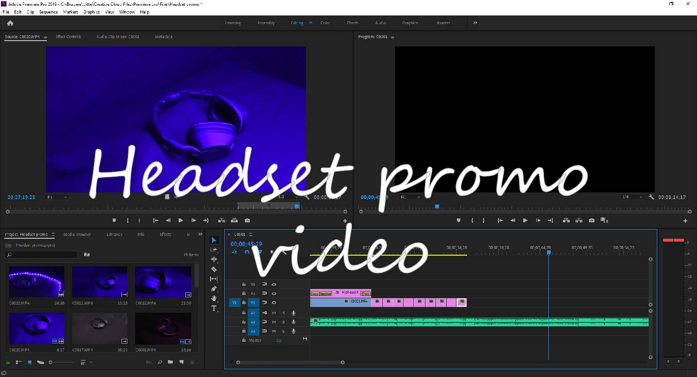
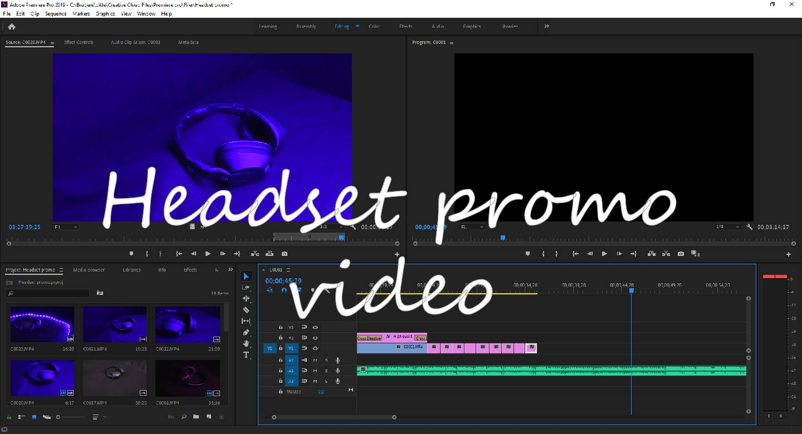

Gennem uddannelsen har jeg været med til at skabe meget indenfor multimedie. Nogle ting har været i samarbejde med en gruppe,
og nogle af dem har jeg selv skabt. På denne side har jeg samlet forskellige kreationer, for at vise mine evner.
Animationer og video
I løbet af uddannelse har jeg lavet nogle forskellige animationer. Nogle af dem er CSS animationer, hvor jeg har lavet dem frame by frame i Illustrator, også kodet det med CSS for at vise animationen et billede af gangen. Jeg har også lavet 3D animationer i Cinema 4D, hvor jeg har bygget scenen fra bunden også animeret den bagefter. Vores introprojekt lå i at lave en stop-motion animation, som vi lavede via en app på en iPad. Headset videoen er klippet i premiere pro.
 


Hjemmesider og design
I løbet af uddannelsen har jeg lært at kode med HTML, CSS og Javascript, som jeg har brugt til at løse forskellige opgaver med. Blandt andet at lave hjemmesider. Min første eksamen gik ud på at lave en hjemmeside om mig selv, som skulle være kodet fra bunden. Siden der har jeg fået meget mere viden om opsætning af hjemmesider og hvad blandt andet farver kan være med til at udtrykke.
Du kan se min første kodet hjemmeside
her
Mine interresser
Jeg elsker at være kreativ og jeg elsker at kunne bruge alt det jeg lærer. Hver gang jeg får muligheden for at arbejde kreativt når jeg laver projekter, tager jeg den. Jeg skaber også kreative ting i min fritid, men det meste jeg laver går til projekter. Her er et par eksempler fra min fritid og projekt Scala.